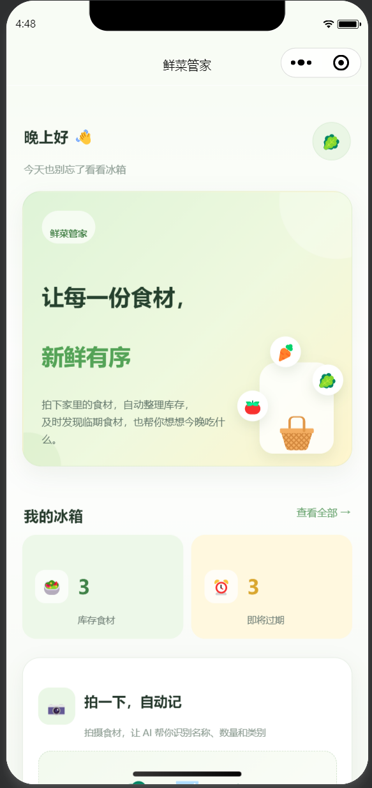
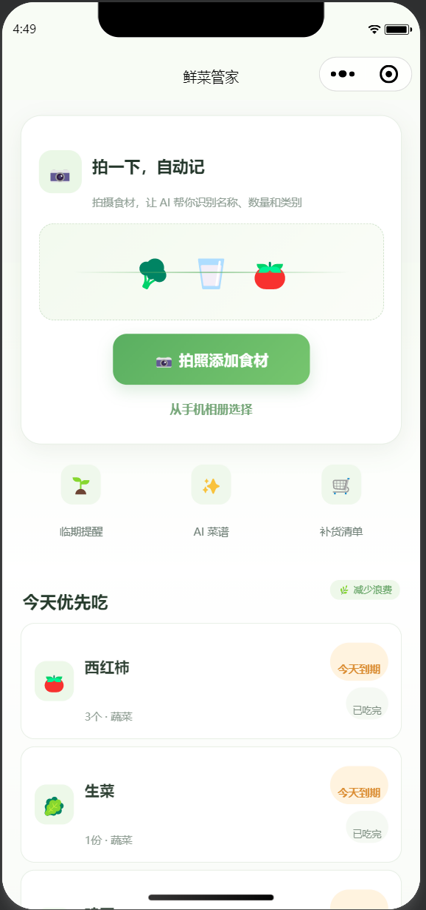
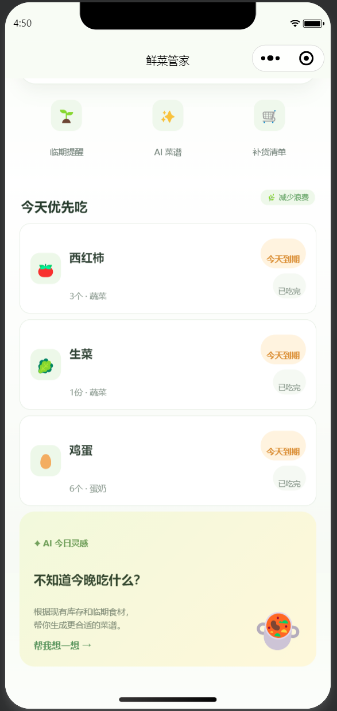
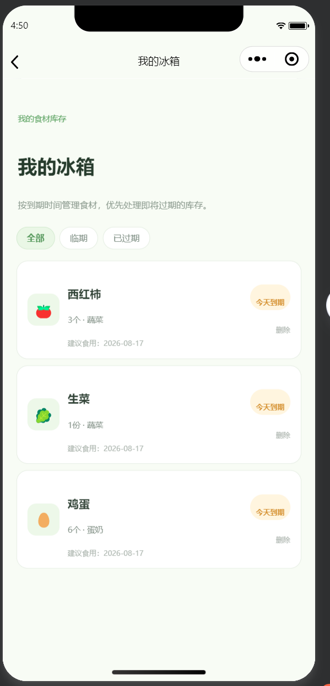
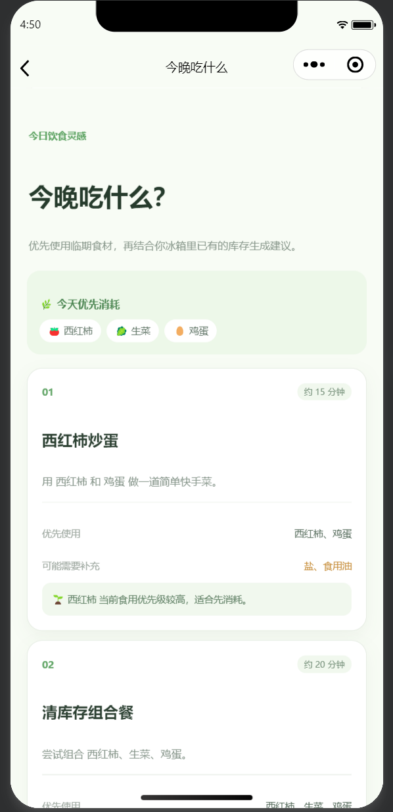
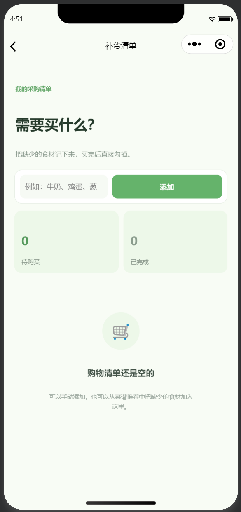

鲜菜管家
把供应链中的库存与临期管理逻辑， 重新设计成一个面向个人生活场景的微信小程序。
用户可以通过手机拍照或相册录入食材， 确认识别结果后建立个人冰箱库存， 再根据食用日期进行临期提醒、优先消耗排序、 菜谱建议与补货管理。
01 · 为什么做这个产品？
最初的想法是解决一个很具体的生活问题： 冰箱里经常有食材被忘记， 真正需要的时候又不知道“有什么、什么快过期、今晚能做什么”。
如果完全依靠用户手动录入食材， 输入成本会非常高。 因此我把产品的核心入口设计成手机拍照， 希望尽可能降低建立库存这一步的使用门槛。
库存、库龄、临期风险、优先消耗和补货， 本质上也是一套小型库存管理逻辑。 我尝试把供应链中熟悉的问题， 重新转化成普通用户可以理解和使用的生活产品。
02 · 产品工作流
降低人工录入成本
形成结构化食材信息
名称、数量和日期可修改
数据保存到个人冰箱
临期、菜谱与补货
PRODUCT PREVIEW
从产品流程到真实界面
当前可交互 MVP

汇总库存、临期状态和主要功能入口。

支持拍照与相册选择食材图片。

优先展示需要尽快处理的库存。

按到期时间管理正常、临期与过期食材。

优先结合临期食材形成菜谱方向。

管理缺少食材与购买完成状态。
03 · 我实际完成了什么？
产品 CASE · 示例用户场景
从“冰箱里有什么？” 到“今天应该先吃什么？”
这个 Case 用一个具体场景展示鲜菜管家的产品逻辑： 用户采购食材后建立冰箱库存， 系统持续根据食用日期判断状态， 再把库存信息转化为更容易执行的下一步行动。
用户周末买了生菜、西红柿和鸡蛋。 几天后再次打开冰箱时， 已经不确定哪些食材需要优先处理。
INPUT
拍照，而不是手动逐条建库存
用户直接通过手机拍照或从相册选择食材照片， 降低第一次建立库存时的输入成本。
VERIFY
AI 给候选结果，人负责最终确认
产品不会让识别结果直接进入库存。 用户可以修改食材名称、数量以及日期， 确认后才真正写入冰箱。
AI 提高录入效率，但不替用户决定最终库存数据。
INVENTORY
从“食材列表”变成“有状态的库存”
食材进入库存后， 小程序会根据日期实时计算剩余天数， 区分正常、临期和已经过期的状态。
DECISION
不只告诉用户“快过期”，还告诉他下一步做什么
临期判断本身不是终点。 首页会把更应该优先处理的食材排在前面， 并进一步连接菜谱建议和补货清单。
根据剩余天数排序， 先看到更需要处理的食材。
根据当前库存组合， 给出可以优先消耗的做饭方向。
把缺少的食材继续转化为 下一次购买任务。
PRODUCT LOOP
上述库存保存、日期计算、临期排序、 已吃完处理、菜谱规则和补货清单均已实现。 当前图片识别阶段仍使用模拟识别结果， 真实 AI Vision 接口属于后续升级项。
展示库存数量、临期数量、 今天优先食材以及拍照入口。
调用微信小程序媒体能力， 支持真实手机照片选择与预览。
用户可修改名称、数量和建议食用日期， 不让模型结果直接进入库存。
根据日期计算剩余天数， 自动生成临期、过期和优先食用状态。
当前通过库存与临期优先级规则 形成饮食建议。
支持添加、完成、删除和保存 待购买食材。
04 · AI 在哪里？
我没有把“使用 AI”理解成让模型控制整个产品。 在这套流程中， AI 更适合承担图像理解、结构化提取 和后续菜谱生成， 而库存规则和最终确认仍由确定性逻辑与用户完成。
食材识别 · 信息提取 · 菜谱候选 · 文本解释
识别确认 · 数量修改 · 日期确认 · 最终库存状态
05 · 当前版本状态
首页、拍照 / 相册、图片预览、 识别确认、库存管理、临期逻辑、 菜谱建议和补货清单已经完成。
当前视觉识别仍使用模拟返回结果； CloudBase AI Vision 模型接口作为下一阶段升级项。 因此这里不把它描述成已经完成真实 AI 图片识别的正式产品。